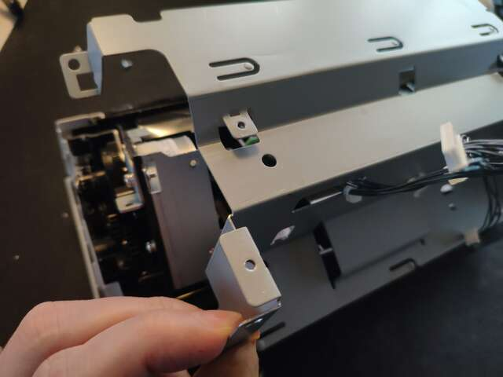

What
My Fujitsu fi-5110c auto-feed scanner broke down due to age-old feed rollers that have become sticky. The feed rollers had passed a threshhold of stickiness that prevent papers from passing through the feed mechanics.
Contents
When
Some years ago I purchased the Fujitsu fi-5110c scanner and have been using it frequently since.
Why
The scanner helps me digitalize and backup all the paperwork that goes over my desk, that can then be thown away.
Background
The earliest mention of the scanner that I could find online is from 2003.
Mine is dated September 2006, but some parts like the feed rollers could be even older.
What happens over time is that the rubber in these rollers breaks down and becomes sticky almost like heated gummi bears.
The scanner will make noises during scanning, beginn tearing up the paper and eventually paper jam. The right of the two feed rollers is already covered in paper shreds that got stuck during scanning.
These small feed rollers, at least on this model of scanner, are not considered a customer serviceable part and so you’d have to send the scanner to a repair shop. The large grey roller in the bottom of the image would be very easily serviceable.
How
Replacement Parts
I was able to order a set of 4 “feed exit roller” replacement parts on eBay for about 18 Eur.
Dismantling the Scanner
From there we need to dismantle the thing, which is quite tedious.
Be sure to mark connectors to be able to reconnect them in the right orientation and I can strongly suggest to take photos as I have. There is a Video on Youtube [1] from a different modell of the scanner that is similar.
You basically have to take the whole scanner apart. Looking back it wasn’t as bad as expected, but during the procedure I was really cursing my life and sustaining multiple cuts from the sharp edged metal pieces. As with other electronics, unfortunately wearing gloves is not a good option, because you need to feel and grip the parts you’re working on.
1. Unscrew bottom cover
2. Pull out electronics board
3. Carefully disconnect plugs
4. Remove Plastic Cover
5. Unscrew, push through cabling and remove metal plate

6. Remove part of the scan assembly
This part is just snapped in at an angle.
Not sure if it’s required to loosen two screws on both sides.
7. Release a small circuit board and remove cap over the rollers

8. Loosen Belts
The belt assembly can be loosend by unscrewing a screw on a metal plate.
and then pulling the belt off
9. Release the rod of the exit feed rollers
There is a small brass clip that can be moved upwards with a small screwdriver
The rod can then be lifted up, the brass end nut can be pulled off, to give access to the feed rollers.
Put new Feed Exit Roller on the rod
With the scanner dissaembled we can move on to replace the top two feed rollers.
1. Remove old Feed Rollers
You can either try to slide them off, but I found it much easier to use the sharp tip of a wire stripper and just cut right through them.
2. Push new Feed Rollers onto the Rod
Then we can use an adequatly sized washer and lots of wd40 to evenly push the new roles onto the rod and to the right position.
If found that using tweezers without a washer and without a lubricant like wd-40 will tear the new feed rollers apart.
As you can see in the image below. Slightly damaged, but they function fine.
Progress
Remove bottom two feed rollers
The bottom two feed rollers are much more easily replaced.
1. Take off the cover panel
Revealing the bottom rod and feed rollers.
2. Remove the old feed rollers
3. Put new feed rollers on
Same as above push the new feed rollers onto the rod with a washer and lots of wd40.
4. Put the plastic cover panelback on
Ressemble
As above fo the “dismantle” steps in reverse.
To get the scanner back in working condition.
Progress
Conclusion
The scanner now works flawlessly. During dismantling I was also able to remove some dust from the scanner bars.
It not only works agains, but the scan results are also better than since I’ve second-hand purchased the scanner.
I hope to not have to repair it in the near future and be able to use it for the next years.
1] "Fi 6130 Feed Roller Exit Roller Replacement", https://www.youtube.com/watch?v=N6bqNL34JCA